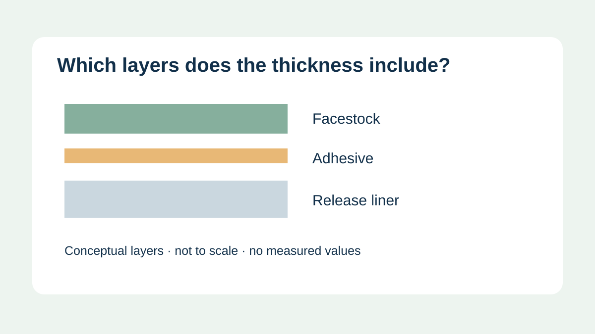
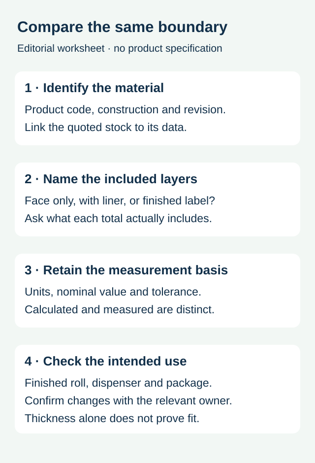

A food-label quote says “thin film,” while another supplier gives a total thickness. A buyer compares the two as though they describe the same object. They may not: one value can describe the facestock, another the supplied adhesive material with its liner, and a third the finished printed label. Before deciding which proposal is thinner, identify the boundary of every number.
Request the construction identity, layers included, units and data basis for each quoted thickness. Then ask the converter and equipment owner which value matters to the actual roll and application. A thickness description alone does not establish print quality, flexibility or machine compatibility.

Give the number a named object
The facestock is the material carrying the print. Adhesive connects the label to its intended surface, while a release liner supports it until application. Additional print and finishing operations may change the finished construction. Ask the supplier what its stated total includes rather than assuming that the word laminate always means the same thing in every document.
For example, Avery Dennison's F45520 material data sheet reports facestock and liner caliper separately from a calculated total caliper. This illustrates why the fields need distinct names. It is a specific material document, not a recommendation, a ZFU product specification or evidence of food-contact suitability.
Use a layer-by-layer comparison sheet


| Field | Information to obtain | Keep distinct |
|---|---|---|
| Material identity | Product code, construction and document revision | A generic film name and a supplied construction |
| Facestock | Nominal thickness and stated basis | The printed face and the whole assembly |
| Liner | Liner type, thickness and whether it is included in the total | The supplied web and the applied label |
| Finish | Proposed coating or protective film and finished construction reference | Raw material data and the delivered printed product |
| Reported total | Included layers, units, tolerance and calculated or measured status | A nominal value and a verified result |
Keep the original source beside any converted display. Use consistent units, and ask the supplier to resolve ambiguous totals before approving the order. Do not back-calculate an adhesive coating from rounded component values and present it as a measured specification. Unknown or unavailable layer information should remain visible.
Keep paper weight separate from thickness
A paper's mass per area and its thickness describe different properties. If a quote names only a paper weight, ask for the relevant caliper or finished construction data when thickness is part of the decision. A change in weight is not, on its own, a verified change in roll build or label flexibility. Likewise, two films described with the same nominal face thickness may be supplied with different adhesives and liners.
Consider a hypothetical sauce brand comparing two roll-label proposals. The face values match, but one proposal uses a different liner and a protective finish. The label on the jar and the material passing through the dispenser may have different comparison boundaries. Request the actual proposed construction and a supported roll plan; do not treat matching face values as proof of an interchangeable supply.
Connect the data to the equipment question
For roll planning, share the actual construction with the converter together with core, outside-diameter, web and loading limits from the equipment owner. Avery Dennison's roll-calculator page treats liner and material thickness as relevant roll-planning inputs. A calculation supports planning within its assumptions; it does not verify the delivered roll or authorize exceeding equipment limits.
The roll specification guide addresses the machine envelope and web-length decision. The liner comparison guide covers performance and collection considerations. Use the finish guide to define protection and appearance. This thickness worksheet connects their material references without replacing their individual acceptance checks.
Send a comparable specification
Share the package, label dimensions, proposed construction, print and finish, application method and roll requirements. Include the actual data sheets and identify the thickness question you need to settle. Prepare a label specification inquiry; the contact page opens an email draft and lists email or WhatsApp for attachments. Materials, tolerances and available services need project-specific confirmation.